- 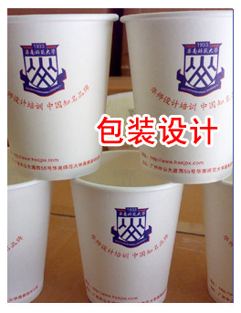
- 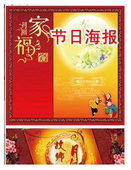
- 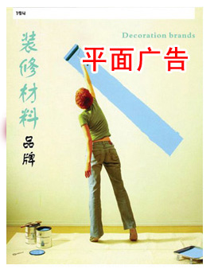
-

- 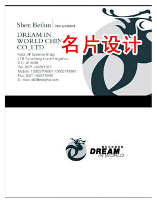
-

-

 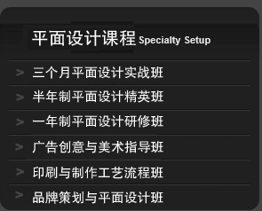
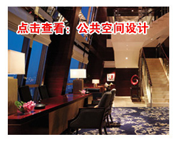
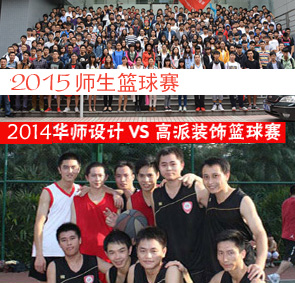
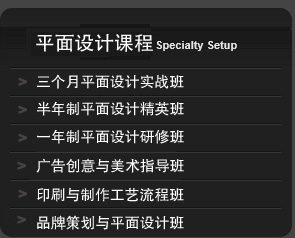
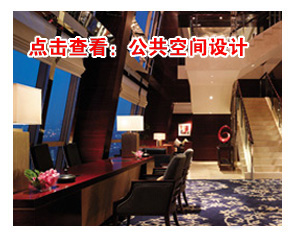
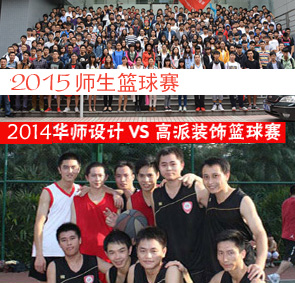
 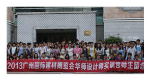
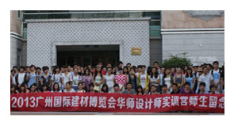
 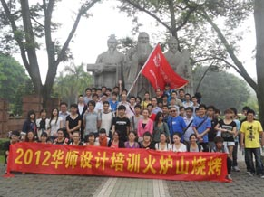
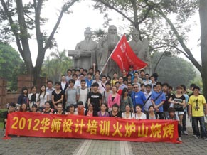


一、课程简介:
平面广告设计也称“视觉传达和广告设计”，是一门浓缩的、综合的、商业性的艺术。成功的设计作品能让默默无闻的产品或企业骤然辉煌。
美前总统罗斯福曾说：“如果我重新开始生活的话，我将从事广告事业！”随着时代的发展，无论你漫步街头，乘车旅行，欣赏影剧，翻阅
报刊杂志，商场购物琳琅满目的商品包装，都将置身平面广告设计作品之中，它于我们工作生活紧密相伴。是培养具有现代设计思维和审美理
念、富有想象力和创造力的实战型平面广告高端设计人才的艺术专业。
二、培训目标：
使学员具有较为扎实的设计理论与实践技能，熟练掌握电脑设计软件以及版式设计、色彩运用及创意设计能力，并能合理运用印刷工艺流程表
现平面作品，从而顺利走上平面设计岗位，独立从事平面设计工作。
三、就业方向：
广告公司、装饰公司、印刷厂、展览展示公司、包装公司、商场、网络公司、招牌设计门店、报社、杂志社或独立创业
| 阶段 | 课程名称 | 主要学习内容 | 达到效果 |
| 第一阶段 美术修美课 |
素描 （形体训练） |
|
提高审美能力 让学员快速到美感 |
| 色彩 （视觉冲击训练） |
学习色彩构成原理，掌握色彩构成规律，提高色彩感觉，掌握运用色彩表现空间 及结构的能力。 |
||
| 平面构成 | 旨在使学习熟悉点、线、面等设计元素的灵活运用，通过学习形式美法则，提高 其艺术处理能力，增强平面作品装饰性 。 |
||
| 第二阶段 电脑设计 |
Photoshop | 学习Photoshop常用工具及图形图像的调色、饱和度、文字编排处理，创意性画 面的制作，图像处理软件的十大主流功能：图像润饰和修补；图层、蒙板和通 道的使用技巧；文字和路径功能的使用；滤镜特效制作技巧；动作功能的使用 等，达到能够独立从事展览展示写真喷绘及影像处理的工作能力。 |
熟练应用软件设计 软件是设计师的表 |
| CorelDRAW | 通过学习其强大而全面的功能，能熟练地掌握各种矢量插图、公司标志、宣传 彩页、产品包装等效果的制作技巧。 熟练操作常用工具及面板、绘制矢量图 形及版式页面编排、复杂图表编辑 。 |
||
| freehand | 学习FreeHand平面设计软件，能够用其绘制卡通、生活用品、标志、标签、瓶贴、包装展开图等效果。 |
||
| illustrator |
|
||
| indesign | 运用排版设计的基本法则、学习软件的使用方法与技巧，掌握出版物、书籍、宣传彩页、报纸杂志等专业排版制作的方法。 |
||
|
广告设计 |
学习广告学发展史、概念和分类，广告定义与分类、广告的功能、 广告策划、
|
精通平面设计相关 更具专业性 |
| VI设计 |
学习标志社会角色的历史转换、标志设计潮流的风格演变、现在标志设计的构
|
||
| 广告招贴设计 | 杂志海报、影视海报、报纸广告、杂志广告、POP广告、路牌广告、户外广告、车身 广告等 |
||
| 包装设计 |
学习包装设计概述、包装的分类、包装的作用与机能、包装设计的视觉传达、包
|
||
| 书籍装帧设计 | 书籍装帧设计是书籍造型设计的总称。通过字纸张、装订方体、版式、印刷、了解并掌握书籍设计的方式等方面流程。 | ||
| 字体设计 | 1、汉字、拉丁文，各种字体的识别； 2、印刷字体； 3、美术字设计常用方法； 4、形式与内容统一； 5、字体必须具有可读性； 6、字体的运用要服从整体设计。 7、广告设计的字体应用； 8、包装设计的字体应用； 9、画册与型录设计的字体应用； 10、书籍装帧设计的字体应用。 |
||
| 版式设计 | 学习版式设计概述、书籍设计回顾、对书籍设计的认识、书籍设计的语言、书籍的规格、书籍的组成部分、封面设计、内页排版等。 | ||
| 写真喷绘 | 1、写真喷绘与印刷有何区别； 2、哪些软件制作的电子文件能直接写真喷绘； 3、写真喷绘的电子文件尺寸，模式，分辩率设置； 4、常见的喷绘形式、材料； 5、怎样控制喷绘的色彩； 6、展板设计：创意、素材、展板设计、喷绘。 |
||
商店超市策划与设计 （商店店销布置） |
、超市常用促销台 、端架、货架贴。 2、堆头，地贴等。 3、关于DM单的设计要求、制作流程 4、掌握DM单内容产品繁杂的归类设计方法 |
||
印刷知识与硬件设备 |
|
||
第四阶段 |
课堂现场案例实战 | 授课老师拿大量实战案例进行操作训练、用案例来熟悉工具的使用，通过案例 |
讲师实战案例 |
课后案例实战
|
课后分排大量案例实战，通过案例来让学生自行消化理解。 | ||
| 第五阶段 设计理念 |
通过前面的案例实战，授课老师从不同的作品入手，与学生分析如何从接单到作品构思、到创作的整个 过程，包括构思、素材选用、色彩搭配 |
引导学生如何创作 | |
| 第六阶段 企业案例实训 |
学校与企业长期保留项目合作，老师负责接单直接发放给学生，将真实项目合拿到课堂演练，让学生与战 零距离，真正做到理论联系实际，而非停留在空洞的理论中，同时项目实战可以让学生有收入，直接感受设 计可以创告价值。 |
实战操作 | |
第七阶段
|
学生学完所有课程后，要求全面运用所学知识，独立完成命题毕业创作，让学生所学知识得到应有的归纳和 总结，通过毕业创作，让学生独立创作属于自已的成功作品。，再次提高学生创作兴趣。 |
让学生独立创作 | |
第八阶段
|
学完美术、电脑、设计理念与后期制作后，每一门课程都必须进行考核心，所有课程结 综合考察学员“知识与技能”掌握的熟练程度，便于加强后期实践、实习 |
归纳总结 | |
第九阶段
|
设计师工作礼仪、电话文化、职业着装、亲和力、沟通能力、敬业程度、适应能力及责任感培养 。 | 素养提升 | |
第十阶段
|
设计师职业用语、神态、妥善处理客户不同意见／如何提高客户对设计方案的认可程度、装修设计合同 的签如何同客户保持长期的合作关系 。 |
成功的设计师条件 | |
第十一阶段
|
目前平面设计工作分类、从业人员状况（薪水收入与能力水平现状）、如何以个人优势参与行业竞争、 行业用人标准 。 |
提高竞争力培训 | |
第十二阶段
|
学员与教师共同进行学员作品的风格、材料、工艺等进行提问与答辩，从而提高学员的沟通、表达 、绘图及设计能力 。 |
面试前培训考核 | |
第十三阶段 |
以真实设计项目分组实战／各实例深度分析讲解 。 | ||
第十四阶段 |
学校定期安排学生去参观输出公司、印刷厂，了解印刷全过程。 | 理论到真正实战 | |
第十五阶段 |
三个月强化后，上交各类设计自身创作作品 。 | 毕业前强化训练 | |
第十六阶段
|
企业直接联系本校安排学生到公司实习，优秀学员全部录用，或学校联系合作单位到我校招聘，目前单位 用工紧张，大量职位虚位已待。 |
工作安排 | |
| 联系报名 | 报名地址 | 广州市天河区中山大道西55号华南师范大学设计师研修基地 ＜点击查看交通地图＞ |
限额报名 |
| 报名方法 | 直接到华南师范大学高教新材二楼室内设计办公室报名 电话：020-85217122 | ||
|
|||
第一部份：美术课程
A、学习内容:
1、素描：明确素描的基本概念，掌握素描的各种表现形式，提高审美和造型能力。通过静物写生，学习构图、比例、透视、明暗、空间等基本造
型元素。重点加强对结构素描的训练。
2、色彩构成：学习色彩构成原理，掌握色彩构成规律，提高色彩感觉，掌握运用色彩表现空间及结构的能力。
B、培训目标：
重点快速提高学生审美能力，学生要设计美首先学会如何审美，所以美术课是平面设计的基础也是重点课程。
第二部份：平面设计专业软件
1、1、Photoshop：基本操作界面、工具使用、层、滤镜及色彩管理，提高实用技巧。
2、CorelDraw：①普通术语和概念
②CorelDraw的基础知识
③基本操作
④通过演示和练习讲解具体使用方法⑤电分分色、印刷的理解和认识。
3、Freehand： ①Freehand的简介
②主工具箱的使用
③xtra操作平台的使用
④文字的运用和页的使用技巧
⑤层的操作
⑥工具与图层在海报、单张设计中的运用
⑦菜单系统的讲解、图形的导出与存盘。
4、Illustrator：基本概念、图形的绘制及其技巧，文字处理，图表介绍，滤镜使用方法，图形的打印及输出。
5、Indesign： 工具界面及其他控制面板、浮动面板的使用方法和技巧，菜单命令的功能和使用方。
培养目的：
所有的设计都是通过手绘表达或电脑来表达出来，电脑软件能够快速精准的表达设计者的思维结果，还可以天马行空达到意想不到的特效，
学生在学习期间必须熟练电脑软件的应用。
第三部份、广告理论与专业课程：
1、学习广告学发展史、概念和分类，广告定义与分类、广告的功能、广告设计与平面设计的关系。
2、学习广告策划、 广告与市场战略、 战术、广告与消费者心理、广告与法律
3、招贴、广告创意、广告构图与草图绘制、POP广告设 计、DM广告设计、媒体选择、广告管理、广告道德规范、 广告公司行业规范及专业术语、
广告 公司运作策略等·品牌建立与推广，品牌竞争等。
培训目标：
学生必须全面了解广告的真正含义，了解广告的功能及相关的法律法规，才能真正通过广告的形式产生商业价值，达到客户真正想的宣传或
表达效果，通过了解客户的需求、消费者心理等设计出真正符合市场的广平面告。
第四部份：设计理念专题课程
学生通过学习完美术、电脑、设计理论与后期制作课程后，教师会通过一系列的真实案例进行真实演练，完成从如何接单到设计稿完成的全部
过程，引导学生如何从客户要求入手、采用反向思维方式进行分析创作。内容包括如何构思广告主题、如何选用素材、如何构图、如何色彩搭配等。
第五部份：后期输出制作
输出菲林注意事项，扫描，打印，外置硬盘使用，平版印刷，丝网印刷的介绍；打印、打样、写真喷绘实战等
第六部份：印刷技术与实操
A、印前学习：
学习从电子文稿到制作成品的过程，以及出现问题和解决问题的方法，菲林注意事项、如何选用纸张、 平板印制、丝网印刷的介绍、以及报
价相关知识，印前技术；印后技术；印刷材料；各类印刷流程广告公司运作规程、了解行业动态，出片标准、平面设计与企业工作规范文件尺寸、模式、
出血的建立、色彩还原、出片、打样、套印、折手、 拼版注意事项、色谱的运用、如何进行印检查、如何检查菲林片、表格的几种制作方法等。
B、印刷工艺流程：
1、印刷种类：
2、纸张开度：纸张开度尺寸、常用纸张的克数、开数、类别。
3、印刷色彩：四色、专色、网线数、角度、色标。
4、制版印刷：出片、打样、PS版、四色印刷、专色印刷。
5、套印、陷印：在各软件中如何设置。
６、印后加工：装订、覆膜、上光、UV、烫金、凹凸、认识和制作模切。
7、拼版方式：自翻版、正背版、滚翻版等。
C、实例设计：
1、广告公司构成和运作介绍、”平面设计师”职责、工作方式介绍、专业的操机姿势
和良好工作习惯.。
2、CIS企业形象策划：标志VI、手册、设计制作。
3、书籍设计与印刷工艺的全过程制作：
4、年历：平面设计、效果图。
5、包装：包装材料的应用、纸结构设计、包装的平面设计、效果图、及流程与运作。
6、企业封套：结构设计、刀模版的制作及效果图。
7、画册制作、报纸的设计制作。
8、手提袋的设计及制作。漫谈陷印技术。
9、POP广告招贴、海报设计、展板设计、菜谱、修图、抠图、名片、扫描去网纹、CD光
盘及特殊折页等。
10、报纸排版设计及制作。
D、设备应用：
讲解扫描仪、打印机、刻录机、外置硬盘使用、数码相机配合设计的使用、应用；喷绘
和印刷机工作原理；苹果系统与PC系统的差异、苹果系统操作、平面设计软件苹果版与
PC版的差异。
E、深入到印刷厂，喷绘公司、出片公司等各个部门实地参观
第七部份：接单淡单
掌握设计师在与客户洽谈过程中的会谈理念，及沟通技巧。通过实际现场演练学习和掌握何打动客户，与客户会谈的内容等专业知识。
第八部份：毕业设计与指导
设计师综合技能训练：在专业老师指导下通常为 3 至 5 项设计任务，学员任选一项，独立完成全套设计方案，让学生全面熟悉平面设计。
第九部份：职业素质培养
职业生涯规划，求职技巧，人际沟通技巧、职场礼仪。
设计师工作礼仪、电话文化、职业着装、亲和力、沟通能力、敬业程度、适应能力及责任感培养 。
>>温馨提示：请选择中国广州平面设计培训学校中实力最强的华南师范大学，拥有一支行业遥遥领先的设计师团队;
1、我校设计师实训基地本身拥有广告设计公司，学员在学习的过程中就可以参与实践和实习，给学员提供一个良好的学习
实践平台。
2、学员报名请先到我校设计培训网站：www.hssjpx.com.cn.看教学楼地址和学校地图，以便来报名时候方便。
点击查看：教学楼地图
欢迎同学来校参观我们安静优美的教学环境，是华南地区最大型的室内设计培训学校,提供华南师范大学学生宿舍，吃在学校安全卫生
的统一学生食堂；